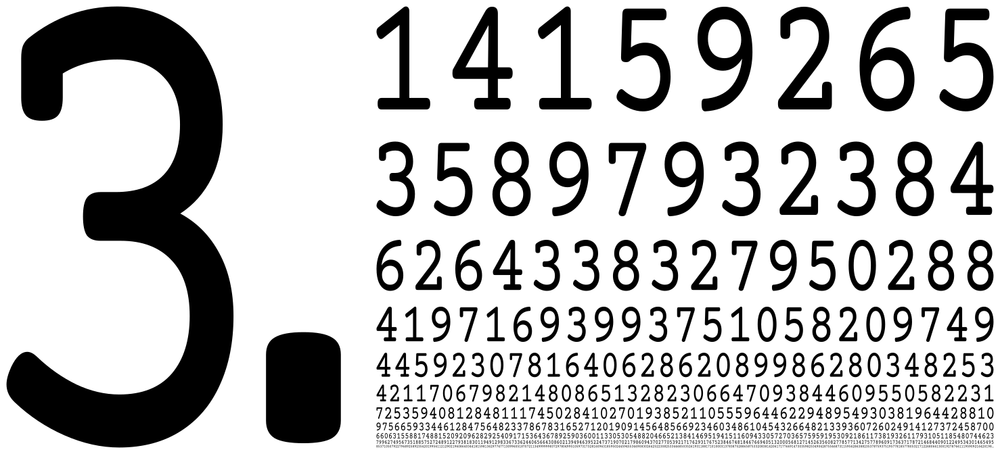
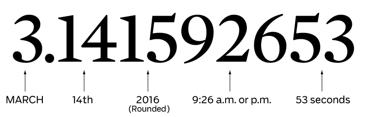
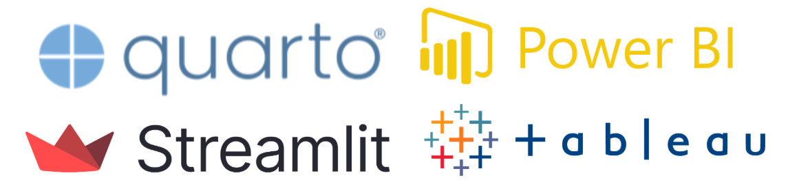

import anthropic
import pandas as pd
client = anthropic.Anthropic()
df = pd.read_csv("ventas_regiones.csv")
# El analista define el contexto — la IA genera el borrador narrativo
resumen = df.describe().to_string()
audiencia = "directorio ejecutivo, reunión de presupuesto Q3"
proposito = "aprobar inversión en zona norte"
prompt = f"""
Eres un analista de datos senior. Tienes este resumen estadístico:
{resumen}
La audiencia es: {audiencia}
El propósito de la presentación es: {proposito}
Propón una estructura narrativa de 3 puntos con el insight principal,
la tensión en los datos y la resolución recomendada.
Sé específico. Usa los números del resumen.
"""
mensaje = client.messages.create(
model="claude-opus-4-7",
max_tokens=1024,
messages=[{"role": "user", "content": prompt}]
)
print(mensaje.content[0].text)Datos, Storytelling e IA
El nuevo arte de contar con datos
Francisco Alfaro Medina
Dirección de Transformación Digital · UTFSM
2026-06-01
Datos, Storytelling e IA
El nuevo arte de contar con datos
Narrativa · Visualización · IA Generativa · Python · Quarto
Data Saturday Santiago · 6 Junio 2026
Francisco Alfaro Medina
Universidad Técnica Federico Santa María
Dirección de Transformación Digital · 2026
Sobre Nosotros
FA
Francisco Alfaro
Líder de Análisis y Modelación Avanzada
Especialista en inteligencia artificial, estadística y educación.
🌐 PortfolioVC
Valeska Canales
Científica de Datos
Especialista en visualización, storytelling y comunicación de datos.
🌐 PortfolioAR
Aníbal Romo
Gestión del Cambio Organizacional
Profesional en transformación digital e innovación institucional.
💼 LinkedInAgenda
No
Nope
No chance

Storytelling principle #1
Nunca revelar el final antes de tiempo.
Siempre eleva la tensión y el drama
Agenda (v2)
- La IA ya no es una herramienta — es un copiloto narrativo.
- Visualizar más rápido no siempre es mejor.
- El juicio humano es tu ventaja competitiva.
- Tu primera versión seguirá siendo horrible.
Storytelling
Qué es Storytelling?


🔥 Las historias son la primera tecnología humana.
Qué es Data Storytelling?

📊 Data Storytelling es una forma de comunicar con datos.
Ohh, nuestros cerebros son hackables…


Atención y memoria


Narrativa
Usa trucos de Storytelling (narrativa) para crear presentaciones que serán recordadas y que causarán impacto

🎭 Emociones inspiran acción
Más que gráficos bonitos
 🔢 No compartas números
🔢 No compartas números
 🪶Comparte una historia
🪶Comparte una historia
(C) Storytelling with Data, por Cole Nussbaumer Knaflic.
Storytelling principle #2
Los detalles son importantes, pero no todos los detalles son importantes.
Ejemplo: Spotify Wrapped

Cómo hacer millones de personas
compartir estadísticas en redes sociales?

Visualización
Visualización …
- Gráficos claros y comprensibles
- Elección correcta del gráfico
- Patrones y anomalías visibles
- Datos complejos → ideas simples

⌛ Si no se entiende en 5-7 segundos, simplifica o cambia el título.

Más fácil de distinguir ⟵────────────────────────────⟶ Más difícil de distinguir
Ejemplos

❌ Chartjunk

✅ Good Chart
Storytelling principle #3
Explicar Menos, Mostrar Más
Mejores Gráficos para tus Datos


(C) Essential chart types for data visualization, by Atlassian.
4 Pilares Visualización - Noah Iliinsky
- Propósito: Define la meta.
- Contenido: Datos relevantes.
- Estructura: Organización clara.
- Formato: Gráfico adecuado.
(C) Noah Iliinsky: “Four Pillars of Visualization” - YouTube.
Herramientas



Inteligencia Artificial


🥱 1° versión \(<\) … \(<\) 😊 última versión
Storytelling principle #4
Tu primera versión será siempre horrible.
…y hoy la IA te ayuda a llegar más rápido a la buena.
La ecuación está cambiando
“Contar historias con datos siempre ha sido un desafío. Transformar números en narrativas que informen, persuadan y movilicen requiere claridad visual, estructura narrativa y criterio comunicacional.”
Durante años, ese trabajo dependía casi completamente del analista:
- ✍️ Elegir el gráfico correcto
- 🧵 Encontrar el hilo conductor
- 🎯 Adaptar el mensaje a la audiencia
🤖
Hoy, la IA
está cambiando esa ecuación
de formas que recién
empezamos a entender.
Tres dimensiones del cambio
01
De la herramienta
al copiloto narrativo
al copiloto narrativo
La IA ya no solo limpia datos o sugiere gráficos. Hoy propone estructuras narrativas completas y adapta el tono según la audiencia.
02
Visualización generativa:
más rápido, pero no siempre mejor
más rápido, pero no siempre mejor
Pasar de datos crudos a visualizaciones en segundos es una ventaja real — y también una trampa cuando se usa sin criterio.
03
El juicio humano
como ventaja competitiva
como ventaja competitiva
La IA sabe generar, no decidir. Saber qué historia importa, para quién y por qué ahora sigue siendo territorio humano.
Dimensión 1 · De la Herramienta al Copiloto
La pregunta ya no es cómo construir el primer borrador.
La pregunta ahora es: ¿cómo evaluarlo, refinarlo y hacerlo propio?
Cómo evolucionó el rol de la IA
2020 – 2022
🔧 Herramienta de soporte
Autocompletar código, sugerir tipos de gráficos, limpiar datasets con pandas. El analista diseña todo, la IA ejecuta tareas puntuales.
2023 – 2024
✍️ Asistente de contenido
Genera código Python completo, escribe descripciones de gráficos, resume hallazgos. El analista aún define la estructura narrativa.
2025 – 2026
🧭 Copiloto narrativo
Propone estructuras narrativas completas, genera versiones alternativas de una historia, adapta el tono según audiencia (directivo vs. técnico), identifica la tensión en los datos.
Antes vs. Ahora
Antes
📄Página en blanco: el analista construye la narrativa desde cero
🔁Iteración manual: una versión a la vez, días de trabajo
🎯El analista es escritor, editor y diseñador al mismo tiempo
⏱️El primer borrador consume la mayor parte del tiempo disponible
→
Ahora
🤖La IA propone una estructura narrativa completa como punto de partida
⚡Múltiples versiones en paralelo: ¿tono ejecutivo? ¿técnico? ¿divulgativo?
🧑⚖️El analista se convierte en curador y editor, no en escritor
✅El tiempo se invierte en refinar, validar y hacer propia la historia
Qué puede hacer la IA hoy
Narrativa
- Proponer estructuras narrativas (problema → tensión → resolución)
- Generar versiones por audiencia: directivo, técnico, prensa
- Escribir resúmenes ejecutivos desde un dataset
- Identificar el insight principal entre cientos de métricas
Visualización
- Sugerir el tipo de gráfico más adecuado para cada mensaje
- Describir en lenguaje natural qué muestra un gráfico
- Generar código completo (Python/R/Vega-Lite) desde una descripción
- Proponer paletas y jerarquía visual según la historia
El trabajo no desaparece — el punto de partida cambia.
El nuevo stack de Data Storytelling
Generar narrativa
- ChatGPT o1 / Claude 3.5 → guión, insights, resumen ejecutivo
- Gemini 2.0 → análisis multimodal (sube el gráfico, pide la historia)
- NotebookLM → convierte tu dataset en podcast o briefing
Crear visualizaciones
- Napkin AI → texto → diagrama en segundos
- Gamma → datos → presentación completa
- Julius AI → chat con tu CSV, genera gráficos automáticamente
Ejecutar y desplegar
- Streamlit + Claude API → apps de datos con lenguaje natural
- Evidence.dev → reportes en Markdown con SQL en vivo
- Observable Framework → dashboards estáticos de alto rendimiento
Modelos locales (sin mandar datos a la nube)
- Ollama + LLaMA 3 / Mistral → corre modelos en tu laptop
- LM Studio → interfaz visual para modelos locales
- Anything LLM → RAG local sobre tus propios documentos
Dimensión 2 · Visualización Generativa
Más rápido, pero no siempre mejor.
La velocidad puede producir ruido visual disfrazado de insight.
La promesa: datos → visualización en segundos
Herramientas como Napkin AI, Copilot en Power BI y los modelos multimodales permiten pasar de datos crudos a visualizaciones en segundos.
Eso es una ventaja real:
- ⚡ Explorar decenas de opciones visuales en minutos
- 🔄 Iterar el mismo gráfico para distintas audiencias
- 💡 Descubrir patrones que no habrías buscado
- 🧪 Probar hipótesis visuales sin escribir código
Flujo tradicional
📂 Cargar datos (10 min)
🧹 Limpiar y explorar (45 min)
📊 Elegir y construir gráfico (30 min)
✍️ Escribir narrativa (60 min)
Flujo con IA
📂 Cargar datos (10 min)
🤖 IA: explorar + visualizar (5 min)
🧑⚖️ Analista: curar + validar (45 min)
La trampa: velocidad sin criterio
⚠️ Caso real: el gráfico que confunde
La IA genera un gráfico de barras apiladas con 12 categorías, 3 años de datos, doble eje Y y un degradado de colores para "diferenciar mejor".
El resultado se ve profesional. Los colores son consistentes. El título tiene keywords del negocio.
Pero nadie puede leerlo en 7 segundos. Y el insight que importa está enterrado en la cuarta barra del segundo año.
Por qué ocurre:
- La IA optimiza para completitud, no para claridad
- No sabe cuál es el insight que importa
- El gráfico “bonito” genera confianza falsa
- La velocidad reduce el tiempo de reflexión crítica
El gráfico perfecto para la historia incorrecta sigue siendo un error.
Cuándo la IA ayuda vs. cuándo confunde
✅ La IA ayuda cuando...
📈Necesitas explorar rápidamente qué tipo de gráfico comunica mejor una tendencia
🔁Quieres generar 5 versiones del mismo gráfico para audiencias distintas en minutos
🔍Buscas patrones que no anticipabas en un dataset grande y complejo
📝Necesitas un primer borrador de narrativa para revisarlo y refinarlo con criterio propio
❌ La IA confunde cuando...
🎨Se acepta el primer gráfico generado sin verificar si comunica el mensaje correcto
📊Se prioriza la riqueza visual (más colores, más métricas) sobre la claridad del mensaje
🏃La velocidad de generación reduce el tiempo dedicado a validar el insight detrás del dato
🔒Se confunde "la IA lo generó" con "la historia es correcta y relevante para esta audiencia"
IA + Visualización: el estado del arte


Agentes de IA para datos
Un agente no solo responde — planifica, ejecuta pasos y usa herramientas.
En data storytelling:
- 🔍 El agente hace el EDA y describe los patrones
- 📊 Elige y genera la visualización adecuada
- 📝 Propone una narrativa por audiencia
- 🔁 El analista revisa la historia, no el código
Frameworks en 2026
| Herramienta | Para qué |
|---|---|
| Claude Code | Agente de código en terminal |
| LangGraph | Flujos multi-agente complejos |
| CrewAI | Equipos de agentes especializados |
| n8n | Automatización sin código |
| Copilot Studio | Agentes empresariales (Microsoft) |
Dimensión 3 · El Juicio Humano
La IA sabe generar. No sabe decidir.
Saber qué historia importa, para quién y por qué ahora
sigue siendo territorio humano.
Lo que la IA no sabe
🎯
Qué historia importa
La IA puede encontrar patrones en los datos. No puede saber cuál de esos patrones es estratégicamente relevante para tu organización hoy.
Las ventas bajaron en zona norte Y en zona sur. ¿Cuál cuenta la historia que el directorio necesita escuchar?
👥
Para quién
La IA puede cambiar el tono si se lo pides. No conoce a las personas en la sala, su historia con el tema, sus sesgos y sus preocupaciones.
El CFO y el equipo de producto ven los mismos datos. La historia que mueve a cada uno es completamente distinta.
⏰
Por qué ahora
La IA no tiene contexto organizacional ni temporal. No sabe que hay una fusión en curso, un presupuesto a decidir o una crisis que gestionar.
El mismo dato de rotación de personal tiene significados completamente distintos en enero que en octubre de un año electoral.
El framework: IA + criterio humano
🎯
Propósito
¿Qué debe cambiar en quien escucha? ¿Qué acción o decisión se busca?
IA puede
Generar hipótesis de insights posibles desde los datos
Humano decide
Cuál de esos insights importa dado el contexto estratégico real
👥
Audiencia
¿Quién escucha? ¿Qué saben, qué les preocupa, qué los mueve?
IA puede
Adaptar vocabulario y tono si defines el perfil de audiencia
Humano decide
Qué sabe esa audiencia específica y cómo está emocionalmente situada
⚡
Tensión
¿Cuál es el conflicto o problema que la historia resuelve?
IA puede
Identificar anomalías, brechas y tendencias en los datos
Humano decide
Cuál de esas tensiones es la que moviliza a esta audiencia ahora
✅
Resolución
¿Qué hace el oyente después de escuchar la historia?
IA puede
Proponer recomendaciones y cierres narrativos posibles
Humano decide
Si esa resolución es viable, oportuna y éticamente responsable
Aplicando el framework: un ejemplo real
El dato: La tasa de deserción estudiantil en primer año aumentó un 18% en el último semestre.
Sin framework (lo que haría la IA sola):
“Las métricas de retención estudiantil muestran una variación negativa de 18 puntos porcentuales en el período analizado. Se recomienda revisar los factores asociados.”
🔴 Correcto. Inútil.
Con framework (analista + IA):
🎯 Propósito: Que el Comité Académico apruebe una intervención de acompañamiento temprano antes de julio.
👥 Audiencia: Directivos con presión por rankings, pero sin datos históricos de cohortes anteriores.
⚡ Tensión: El 18% no es nuevo — es el mismo patrón de hace 3 años, cuando no se actuó. Eso es la historia.
✅ Resolución: “Tenemos la misma señal de alarma que en 2022. En 2022 no actuamos. Esta vez, tenemos 6 semanas para hacer la diferencia.”
Demo en vivo
Python · Quarto · IA Generativa
Flujos de trabajo reales donde la IA amplifica el criterio del analista sin reemplazarlo.
Demo 1 · Copiloto narrativo con Claude API
Demo 2 · Reporte parametrizado con Quarto
# En _quarto.yml o en el header del .qmd:
# params:
# region: "Norte"
import anthropic
import pandas as pd
region = "Norte" # params["region"] en producción
df = pd.read_csv(f"datos_{region.lower()}.csv")
kpis = df.agg({"ventas": "sum", "desercion": "mean", "nps": "mean"})
# Narrativa generada automáticamente para cada región
client = anthropic.Anthropic()
response = client.messages.create(
model="claude-opus-4-7",
max_tokens=512,
messages=[{
"role": "user",
"content": f"Resume en 2 oraciones los KPIs para la región {region}: "
f"Ventas={kpis['ventas']:,.0f}, "
f"Deserción={kpis['desercion']:.1%}, "
f"NPS={kpis['nps']:.1f}. "
f"Tono ejecutivo. Señala la tensión principal."
}]
)
# El texto generado se inserta directamente en el reporte Quarto
narrativa = response.content[0].textDemo 3 · Del insight al visual en segundos
import anthropic
import pandas as pd
import matplotlib.pyplot as plt
import matplotlib.ticker as mticker
client = anthropic.Anthropic()
df = pd.read_csv("ventas_mensuales.csv")
resumen_csv = df.head(12).to_csv(index=False)
# Paso 1: pedirle a la IA el tipo de gráfico y el título
response = client.messages.create(
model="claude-opus-4-7",
max_tokens=256,
messages=[{
"role": "user",
"content": f"""Datos de ventas mensuales:
{resumen_csv}
Responde en JSON con:
- tipo_grafico: el tipo más adecuado (bar, line, scatter, etc.)
- titulo: título conciso que comunique el insight principal
- eje_x: nombre del eje X
- eje_y: nombre del eje Y
- color_destacado: mes o categoría a destacar si existe uno
Solo JSON, sin explicación."""
}]
)
import json
config = json.loads(response.content[0].text)
# Paso 2: el analista genera el gráfico con los parámetros sugeridos
fig, ax = plt.subplots(figsize=(10, 5))
ax.set_title(config["titulo"], fontsize=14, fontweight="bold")
# ... construcción del gráfico con pandas/matplotlib ...Lo que te llevas hoy
🔄
El punto de partida cambió
- La IA genera el primer borrador. Tú lo evalúas y lo haces tuyo.
- Tu valor está en el criterio, no en la velocidad de ejecución.
- Aprende a promtear con propósito y audiencia definidos.
⚡
Velocidad ≠ claridad
- Valida siempre: ¿comunica lo que importa en 7 segundos?
- El gráfico generado por IA es un borrador, no una entrega.
- Más rápido es mejor solo si el criterio de calidad no baja.
🧭
Usa el framework
- Define Propósito + Audiencia antes de hablarle a la IA.
- Deja que la IA encuentre la Tensión en los datos.
- Tú decides la Resolución que es viable y oportuna.
Conclusiones
Agenda (v2) — revisitada
- La IA ya no es una herramienta — es un copiloto narrativo.
- Visualizar más rápido no siempre es mejor.
- El juicio humano es tu ventaja competitiva.
- Tu primera versión seguirá siendo horrible — pero la buena llega más rápido.
🎉 ¡Gracias por Participar!